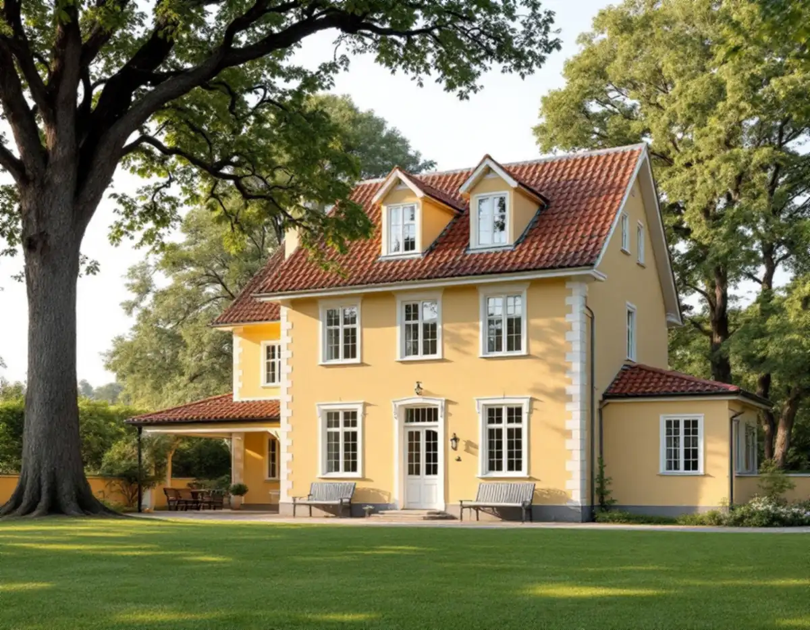
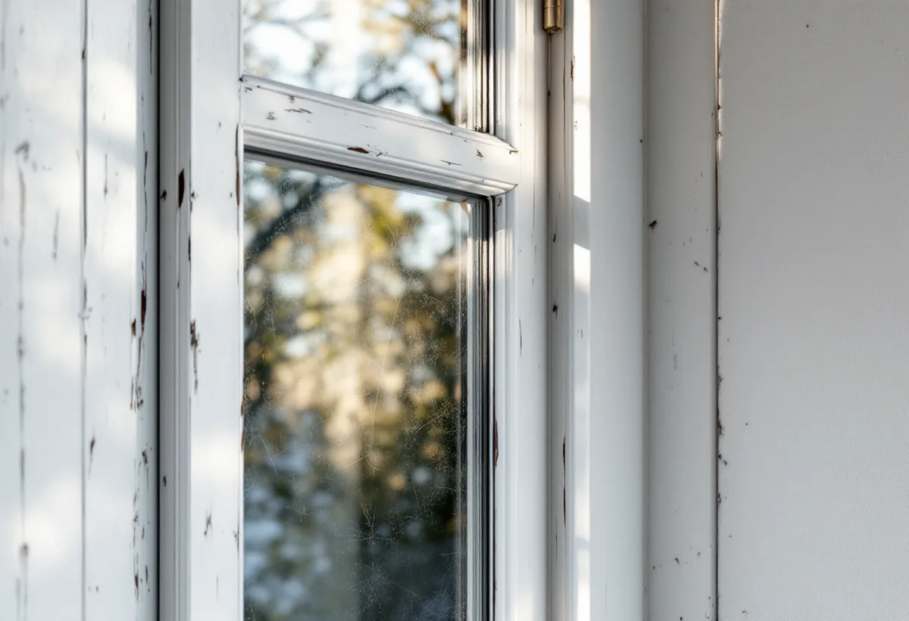

Kartan och planen
Vi kontrollerar kulturmiljökartan och detaljplanen och tar reda på hur huset är klassat.
I Danderyd kan samma fönsterbyte vara lovfritt på en gata och kräva bygglov på nästa. Det avgörs av om huset eller området räknas som kulturhistoriskt särskilt värdefullt. Geal Entreprenad AB byter och renoverar fönster i Djursholm, Stocksund, Enebyberg och resten av Danderyd, tar reda på vad som gäller för just ditt hus och lämnar ett skriftligt kostnadsförslag efter ett gratis platsbesök.

På sin sida om de nya reglerna från den 1 december 2025 svarar Danderyds kommun på frågan om bygglov behövs för ommålning, nytt tak eller fönster. För ett en- eller tvåbostadshus är svaret nej. Kommunen lägger till att ändringar av byggnader ska göras varsamt och på ett sätt som är anpassat till byggnadens värden.
Undantaget väger tungt i Danderyd. Lov krävs om fastigheten ligger inom ett kulturhistoriskt särskilt värdefullt område, om själva byggnaden är kulturhistoriskt särskilt värdefull eller om fastigheten ligger inom ett riksintresse för kulturmiljövården. Vilka fastigheter som berörs går att se i kommunens kulturmiljökarta.
Kommunen påpekar också att många åtgärder inte längre granskas innan arbetet börjar, och att ansvaret för att följa reglerna ligger hos fastighetsägaren. Den som vill ha ett formellt besked kan söka ett frivilligt bygglov. Byggnadsnämnden prövar då att åtgärden uppfyller lagens krav, och du får ett beslut att utgå från.

Danderyds kulturmiljöhandbok delar in husen i de bebyggelseinventeringar som gjorts i tre klasser: omistlig, värdefull och intressant. För de omistliga byggnaderna ska förändringar ske med mycket stor hänsyn till egenarten, för de värdefulla med stor varsamhet. De intressanta byggnaderna anses skyddade genom det som gäller för området i stort. I avsnittet om Danderyds kyrka, Berga och Ekeby räknas till exempel Berga gård och Nybytorp som omistliga.
Handbokens allmänna del, som gäller för alla utpekade områden, säger att stor vikt ska läggas vid att husens ursprungliga exteriör inte förändras genom byte av bland annat fönster, och att ursprungliga material som med sin ålder och patina berättar om äldre hantverk bör bevaras. Nytillskott som fönster, dörrar och burspråk ska anpassas till huset i utformning, placering och materialval.
Därför börjar vi med att ta reda på hur huset är klassat. För ett omistligt eller värdefullt hus är det ofta renovering av de befintliga bågarna som stämmer bäst med handboken, medan ett byte kan vara rimligt på ett hus som redan har fått fönster av senare typ.
Boverket beskriver ett mål i Mark- och miljööverdomstolen från 2015 (P 169–15) om ett enbostadshus från mitten av 1970-talet. Huset låg i en miljö som Riksantikvarieämbetet bedömt vara av riksintresse, och kommunen hade en varsamhetsbestämmelse i detaljplanen. Ägaren ville byta de spröjsade fönstren mot fönster utan spröjs. Domstolen bedömde att det inte var en varsam ändring, och nekat bygglov stod fast.
Det intressanta är att huset inte var gammalt. Det hade fått spröjsade fönster för att anpassas till den äldre bebyggelsen i kvarteret, och domstolen utgick från just den byggnadens karaktärsdrag, inte från vad som var typiskt för 1970-talet. Domstolen noterade också att det inte hade framkommit några större kostnadsskillnader mellan fönster med och utan spröjs.
Danderyd har gott om yngre hus som har ritats för att passa in bland äldre villor. Därför mäter vi upp och fotograferar spröjsindelningen även på ett hus från 1970- eller 80-talet innan nya fönster beställs. Ska fönstren hellre målas och lagas än bytas, läs mer under målare i Danderyd.
Boverkets energiguide påpekar att äldre glas och invändig profilering kan betyda mycket för hur ett rum upplevs. Om innerbågen får ett energiglas eller en tvåglaskassett vid en renovering kan rutor av äldre munblåst eller valsat glas som blir över användas som ytterrutor på andra bågar, där originalglaset har gått förlorat.
Var arbetet görs har betydelse för rotavdraget. Skatteverket godkänner att reparera eller byta fönster och att montera bullerglas och isolerglas, men inte glas- och plåtarbeten som utförs utanför kundens bostad, till exempel i företagets egna lokaler. Tas bågarna ner för att renoveras på annat håll påverkar det alltså vilken del av arbetet som ger avdrag.
Boverket påminner också om att nya fönster med grövre snickerier släpper in mindre dagsljus, och att bågar, gångjärn och beslag måste klara den extra tyngd som nytt glas ofta innebär. Hör fönsterarbetet ihop med en större översyn av väggarna, se fasadrenovering i Danderyd.
Vi kontrollerar kulturmiljökartan och detaljplanen och tar reda på hur huset är klassat.
Varje fönster mäts upp, spröjs och profiler fotograferas och glaset bedöms.
Fönster för fönster avgör vi vad som kan behållas och vad som behöver bytas.
Ett skriftligt förslag där renovering, nya fönster, glas och montage står var för sig.
Kräver åtgärden lov, eller vill du ha ett frivilligt lov, tas underlaget fram innan beställning.
Fönstren sätts in med drevning och tätning, och vi går igenom resultatet med dig.
Rotavdraget är 30 procent av arbetskostnaden, högst 50 000 kr per person och år och högst 75 000 kr tillsammans med rutavdrag. Kostnader för material, resor och utrustning ger inget avdrag, och du ska äga bostaden när arbetet utförs.
Att byta fönsterbleck och måla fönster räknas också som rotarbete. Geal drar avdraget direkt på fakturan.
Hur många fönster som kan renoveras i stället för att bytas, om spröjs och profiler måste tillverkas efter förlaga, om äldre glas ska tas tillvara och flyttas, om underlag för bygglov behöver tas fram och hur mycket foder och bleck som ska göras om. Efter ett gratis platsbesök får du ett skriftligt kostnadsförslag.
Byta eller renovera fönster.
Fönsterbyte i Stockholm →Takbyte, takbesiktning och plåtarbeten.
Takläggare i Danderyd →Djursholm, Stocksund och Enebyberg.
Takrenovering i Danderyd →Villastäder, lovplikt och strandskydd.
Attefallshus i Danderyd →Tillbyggnad, tomt och kommunens riktlinjer.
Byggföretag i Danderyd →Kalkfärg på puts, linoljefärg på trä.
Fasadmålning i Danderyd →Villastäder, egnahem och grupphus i Danderyd.
Fasadrenovering i Danderyd →Villastäder, ritningar och ventilation.
Badrumsrenovering i Danderyd →Varsamt underhåll av villafönster i Djursholm.
Fönsterrenovering i Danderyd →Originalgolv i villor från 1890-talet och framåt.
Golvläggare i Danderyd →Slipa parkett och mönstergolv i villan.
Golvslipning i Danderyd →Villastäder, egnahem och kommunens regler.
Köksrenovering i Danderyd →Villor, egnahem och grupphus i Danderyd.
Målare i Danderyd →Rännor, stuprör och beslag i Danderyd.
Plåtslagare i Danderyd →Altaner, staket och carport.
Snickare i Danderyd →Villastaden, takmaterial och solceller.
Takbyte i Danderyd →Tapet och papptak i äldre villor.
Tapetsering i Danderyd →Funkis, grupphus och 1950-talsvillor.
Tillbyggnad i Danderyd →Riva varsamt, bygga om helt.
Totalrenovering i Danderyd →